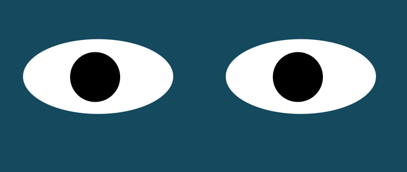

Project Pacman

This is a project where we insert as much pacman pictures as we want in the Dom and eventually we add direction to this images, and they jump from border to border of the Dom
Eye Exercise

This project was made with HTML , Css and Javascript , here we have to ¨eyes¨ that follows the mouse in screen , it actually is two balls that moves in the same cordinates of the mouse, thanks to the command onmousemove
Real Time Bus Tracker Repository
This project uses vanilla JavaScript with Mapbox as a tool to view real time map data tracking the bus route from MIT and Harvard